전기기사 (2019-04-27 기출문제)
1과목: 전기자기학
1. 어떤 환상 솔레노이드의 단면적이 S이고, 자로의 길이가 ℓ, 투자율이 μ라고 한다. 이 철심에 균등하게 코일을 N회 감고 전류를 흘렸을 때 자기 인덕턴스에 대한 설명으로 옳은 것은?
- 투자율 μ에 반비례한다.
- 권선수 N2에 비례한다.
- 자로의 길이 ℓ에 비례한다.
- 단면적 S에 반비례한다.
(정답률: 84%)

2. 상이한 매질의 경계면에서 전자파가 만족해야 할 조건이 아닌 것은? (단, 경계면은 두 개의 무손실 매질 사이이다.)
- 경계면의 양측에서 전계의 접선성분은 서로 같다.
- 경계면의 양측에서 자계의 접선성분은 서로 같다.
- 경계면의 양측에서 자속밀도의 접선성분은 서로 같다.
- 경계면의 양측에서 전속밀도의 법선성분은 서로 같다.
(정답률: 69%)
3. 유전율이 ε, 도전율이 σ, 반경이 r1, r2(r1 ＜ r2) 길이가 l인 동축케이블에서 저항 R은 얼마인가?
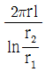
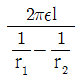
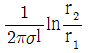
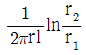
(정답률: 65%)
4. 단면적 S, 길이 l, 투자율 μ인 자성체의 자기회로에 권선을 N회 감아서 I의 전류를 흐르게 할 때 자속은?
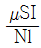
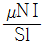
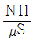
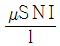
(정답률: 84%)
5. 30V/m의 전계내의 80V 되는 점에서 1C의 전하를 전계 방향으로 80cm 이동한 경우, 그 점의 전위(V)는?
- 9
- 24
- 30
- 56
(정답률: 74%)
6. 도전율 σ인 도체에서 전장 E에 의해 전류밀도 J가 흘렀을 때 이 도체에서 소비되는 전력을 표시한 식은?
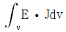
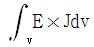
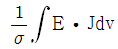
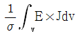
(정답률: 45%)
7. 자극의 세기가 8×10-6Wb, 길이가 3cm인 막대자석을 120 AT/m의 평등자계 내에 자력선과 30°의 각도로 놓으면 이 막대자석이 받는 회전력은 몇 N ㆍ m인가?
- 1.44×10-4
- 1.44×10-5
- 3.02×10-4
- 3.02×10-5
(정답률: 76%)
8. 정상전류계에서 옴의 법칙에 대한 미분형은? (단, i는 전류밀도, k는 도전율, ρ는 고유저항, E는 전계의 세기이다.)
- i = kE
- i = E / k
- i = ρE
- i = -kE
(정답률: 70%)
9. 자기인덕턴스의 성질을 옳게 표현한 것은?
- 항상 0 이다.
- 항상 정(正)이다.
- 항상 부(負)이다.
- 유도되는 기전력에 따라 정(IE)도 되고 부(負)도 된다.
(정답률: 75%)
10. 4A전류가 흐르는 코일과 쇄교하는 자속수가 4Wb이다. 이 전류 회로에 축척되어 있는 자기 에너지(J)는?
- 4
- 2
- 8
- 16
(정답률: 65%)
11. 진공 중에서 빛의 속도와 일치하는 전자파의 전파속도를 얻기 위한 조건으로 옳은 것은?
- εr=0, μr=0
- εr=1, μr=1
- εr=0, μr=1
- εr=1, μr=0
(정답률: 80%)
12. 그림과 같이 평행한 무한장 직선도선에 I(A), 4I(A)인 전류가 흐른다. 두 선 사이의 점 P에서 자계의 세기가 0이라고 하면 a/b 는?
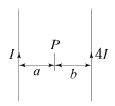
- 2
- 4
- 1/2
- 1/4
(정답률: 72%)
13. 자기회로와 전기회로의 대응으로 틀린 것은?
- 자속 ↔ 전류
- 기자력 ↔ 기전력
- 투자율 ↔ 유전율
- 자계의 세기 ↔ 전계의 세기
(정답률: 81%)
14. 자속밀도가 0.3 Wb/m2 인 평등자계 내에 5A의 전류가 흐르는 길이 2m인 직선도체가 있다 이 도체를 자계 방향에 대하여 60°의 각도로 놓았을 때 이 도체가 받는 힘은 약 몇 N 인가?
- 1.3
- 2.6
- 4.7
- 5.7
(정답률: 79%)
15. 진공 중에서 한 변이 a(m) 인 정사각형 단일 코일이 있다. 코일에 I(A)의 전류를 흘릴 때 정사각형 중심에서 자계의 세기는 몇 AT/m 인가?
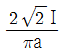
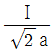
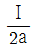
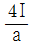
(정답률: 85%)
16. 진공내의 점(3, 0, 0) (m)에 4×10-9 C의 전하가 있다. 이 때 점(6, 4, 0) (m)의 전계의 크기는 약 몇 V/m 이며，전계의 방향을 표시하는 단위벡터는 어떻게 표시되는가?
- 전계의 크기 :
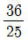
, 단위벡터 :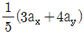
- 전계의 크기 :
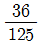
, 단위벡터 : 3ax+4ay - 전계의 크기 :
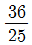
, 단위벡터 : ax+ay - 전계의 크기 :
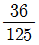
, 단위벡터 :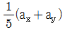
(정답률: 73%)
17. 전속밀도 D=X2i+Y2j+Z2k (C/m2) 를 발생시키는 점(1, 2, 3)에서의 체적 전하밀도는 몇 C/m3 인가?
- 12
- 13
- 14
- 15
(정답률: 61%)
18. 다음 식 중에서 틀린 것은?
- E = -grad V
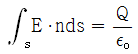
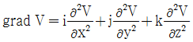
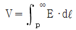
(정답률: 72%)
19. 어떤 대전체가 진공 중에서 전속이 Q(C) 이었다. 이 대전체를 비유전율 10인 유전체 속으로 가져갈 경우에 전속(C)은?
- Q
- 10Q
- Q / 10
- 10ε0Q
(정답률: 58%)
20. 다음 중 스토크스(stokes)의 정리는?
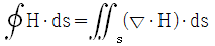
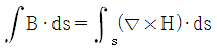
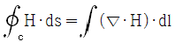
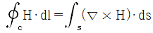
(정답률: 67%)
2과목: 전력공학
21. 직류 송전방식에 관한 설명으로 틀린 것은?
- 교류 송전방식보다 안정도가 낮다.
- 직류계통과 연계 운전 시 교류계통의 차단용량은 작아진다.
- 교류 송전방식에 비해 절연계급을 낮출 수 있다.
- 비동기 연계가 가능하다.
(정답률: 70%)
22. 유효낙차 100m, 최대사용수량 20m3/s, 수차효율 70% 인 수력발전소의 연간 발전전력량은 약 몇 kWh 인가? (단, 발전기의 효율은 85%라고 한다.)
- 2.5 × 107
- 5 × 107
- 10 × 107
- 20 × 107
(정답률: 56%)
23. 일반 회로정수가 A, B, C, D이고 송전단 전압이 ES 인 경우 무부하시 수전단 전압은?
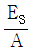
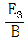
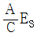
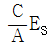
(정답률: 67%)
24. 한 대의 주상변압기에 역률(뒤짐) cosθ1, 유효전력 P1(kW)의 부하와 역률(뒤짐) cosθ2, 유효전력 P2(kW)의 부하가 병렬로 접속되어 있을 때 주상변압기 2차 측에서 본 부하의 종합역률은 어떻게 되는가?
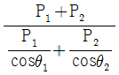
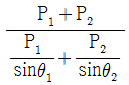
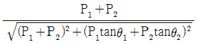
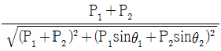
(정답률: 78%)
25. 옥내배선의 전선 굵기를 결정할 때 고려해야 할 사항으로 틀린 것은?
- 허용전류
- 전압강하
- 배선방식
- 기계적강도
(정답률: 73%)
26. 선택 지락 계전기의 용도를 옳게 설명한 것은?
- 단일 회선에서 지락고장 회선의 선택 차단
- 단일 회선에서 지락전류의 방향 선택 차단
- 병행 2회선에서 지락고장 회선의 선택 차단
- 병행 2회선에서 지락고장의 지속시간 선택 차단
(정답률: 76%)
27. 33kV 이하의 단거리 송배전선로에 적용되는 비접지 방식에서 지락전류는 다음 중 어느 것을 말하는가?
- 누설전류
- 충전전류
- 뒤진전류
- 단락전류
(정답률: 47%)
28. 터빈(turbine)의 임계속도란?
- 비상조속기를 동작시키는 회전수
- 회전자의 고유 진동수와 일치하는 위험 회전수
- 부하를 급히 차단하였을 때의 순간 최대 회전수
- 부하 차단 후 자동적으로 정정된 회전수
(정답률: 66%)
29. 공통 중성선 다중 접지방식의 배전선로에서 Recloser(R)， Sectionalizer(S)， Line fuse(F)의 보호협조가 가장 적합한 배열은? (단, 보호협조는 변전소를 기준으로 한다.)
- S - F - R
- S - R - F
- F - S - R
- R - S - F
(정답률: 75%)
30. 송전선의 특성임피던스와 전파정수는 어떤 시험으로 구할 수 있는가?
- 뇌파시험
- 정격부하시험
- 절연강도 측정시험
- 무부하시험과 단락시험
(정답률: 81%)
31. 단도체 방식과 비교하여 복도체 방식의 송전선로를 설명한 것으로 틀린 것은?
- 선로의 송전용량이 증가된다.
- 계통의 안정도를 증진시킨다.
- 전선의 인덕턴스가 감소하고, 정전용량이 증가된다.
- 전선 표면의 전위경도가 저감되어 코로나 임계전압을 낮출 수 있다.
(정답률: 75%)
32. 10000 kVA 기준으로 등가 임피던스가 0.4% 인 발전소에 설치될 차단기의 차단용량은 몇 MVA 인가?
- 1000
- 1500
- 2000
- 2500
(정답률: 73%)
33. 고압 배전선로 구성방식 중, 고장 시 자동적으로 고장개소의 분리 및 건전선로에 폐로하여 전력을 공급하는 개폐기를 가지며, 수요 분포에 따라 임의의 분기선으로부터 전력을 공급하는 방식은?
- 환상식
- 망상식
- 뱅킹식
- 가지식(수지식)
(정답률: 50%)
34. 중거리 송전선로의 T형 회로에서 송전단 전류 Is 는? (단，Z, Y는 선로의 직렬 임피던스와 병렬 어드미턴스이고, Er은 수전단 전압, Ir은 수전단 전류이다.)
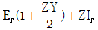
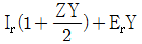
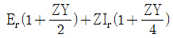
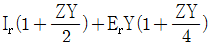
(정답률: 58%)
35. 전력계통 연계 시의 특징으로 틀린 것은?
- 단락전류가 감소한다.
- 경제 급전이 용이하다.
- 공급신뢰도가 향상된다.
- 사고 시 다른 계통으로의 영향이 파급될 수 있다.
(정답률: 72%)
36. 아킹혼(Arcing Horn)의 설치 목적은?
- 이상전압 소멸
- 전선의 진동방지
- 코로나 손실방지
- 섬락사고에 대한 애자보호
(정답률: 78%)
37. 변전소에서 접지를 하는 목적으로 적절하지 않은 것은?
- 기기의 보호
- 근무자의 안전
- 차단 시 아크의 소호
- 송전시스템의 중성점 접지
(정답률: 59%)
38. 그림과 같은 2기 계통에 있어서 발전기에서 전동기로 전달되는 전력 P는? (단, X=XG+XL+XM 이고 EG, EM은 각각 발전기및 전동기의 유기기전력, δ는 EG와 EM간의 상차각이다.)
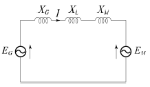
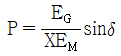
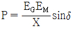
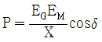
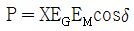
(정답률: 69%)
39. 변전소, 발전소 등에 설치하는 피뢰기에 대한 설명 중 틀린 것은?
- 방전전류는 뇌충격전류의 파고값으로 표시한다.
- 피뢰기의 직렬갭은 속류를 차단 및 소호하는 역할을 한다.
- 정격전압은 상용주파수 정현파 전압의 최고 한도를 규정한 순시값이다.
- 속류란 방전현상이 실질적으로 끝난 후에도 전력계통에서 피뢰기에 공급되어 흐르는 전류를 말한다.
(정답률: 63%)
40. 부하역률이 cosθ 인 경우 배전선로의 전력손실은 같은 크기의 부하전력으로 역률이 1인 경우의 전력손실에 비하여 어떻게 되는가?
- 1 / cosθ
- 1 / cos2θ
- cosθ
- cos2θ
(정답률: 71%)
3과목: 전기기기
41. 100V, 10A, 1500rpm인 직류 분권발전기의 정격 시의 계자전류는 2A이다. 이 때 계자 회로에는 10Ω의 외부저항이 삽압되어 있다. 계자권선의 저항(Ω)은?
- 20
- 40
- 80
- 100
(정답률: 53%)
42. 직류발전기의 외부 특성곡선에서 나타내는 관계로 옳은 것은?
- 계자전류와 단자전압
- 계자전류와 부하전류
- 부하전류와 단자전압
- 부하전류와 유기기전력
(정답률: 64%)
43. 가정용 재봉틀, 소형공구, 영사기, 치과의료용, 엔진 등에 사용하고 있으며, 교류, 직류 양쪽 모두에 사용되는 만능전동기는?
- 전기 동력계
- 3상 유도전동기
- 차동 복권전동기
- 단상 직권정류자전동기
(정답률: 66%)
44. 동기발전기에 회전계자형을 사용하는 경우에 대한 이유로 틀린 것은?
- 기전력의 파형을 개선한다.
- 전기자가 고정자이므로 고압 대전류용에 좋고, 절연하기 쉽다.
- 계자가 회전자지만 저압 소용량의 직류이므로 구조가 간단하다.
- 전기자보다 계자극을 회전자로 하는 것이 기계적으로 튼튼하다.
(정답률: 43%)
45. 전력용 변압기에서 1차에 정현파 전압을 인가하였을 때, 2차에 정현파 전압이 유기되기 위해서는 1차에 흘러 들어가는 여자전류는 기본파 전류 외에 주로 몇 고조파 전류가 포함되는가?
- 제2고조파
- 제3고조파
- 제4고조파
- 제5고조파
(정답률: 74%)
46. 동기발전기의 병렬 운전 중 위상차가 생기면 어떤 현상이 발생하는가?
- 무효 횡류가 흐른다.
- 무효 전력이 생긴다.
- 유효 횡류가 흐른다.
- 출력이 요동하고 권선이 가열된다.
(정답률: 55%)
47. 변압기에서 사용되는 변압기유의 구비 조건으로 틀린 것은?
- 점도가 높을 것
- 응고점이 낮을 것
- 인화점이 높을 것
- 절연 내력이 클 것
(정답률: 76%)
48. 상전압 200V의 3상 반파정류회로의 각 상에 SCR을 사용하여 정류제어 할 때 위상각을 π/6 로 하면 순 저항부하에서 얻을 수 있는 직류전압(V)은?
- 90
- 180
- 203
- 234
(정답률: 38%)
49. 그림은 전원전압 및 주파수가 일정할 때의 다상 유도전동기의 특성을 표시하는 곡선이다. 1차 전류를 나타내는 곡선은 몇 번 곡선인가?
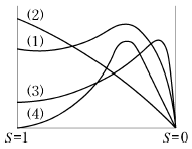
- (1)
- (2)
- (3)
- (4)
(정답률: 60%)
50. 동기전동기가 무부하 운전 중에 부하가 걸리면 동기전동기의 속도는?
- 정지한다.
- 동기속도와 같다.
- 동기속도보다 빨라진다.
- 동기속도 이하로 떨어진다.
(정답률: 50%)
51. 직류기발전기에서 양호한 정류(整流)를 얻는 조건으로 틀린 것은?
- 정류주기를 크게 할 것
- 리액턴스 전압을 크게 할 것
- 브러시의 접촉저항을 크게 할 것
- 전기자 코일의 인덕턴스를 작게 할 것
(정답률: 62%)
52. 스텝각이 2°, 스테핑주파수(pulse rate)가 1800pps인 스테핑모터의 축속도(rps)는?
- 8
- 10
- 12
- 14
(정답률: 58%)
53. 직류기에 관련된 사항으로 잘못 짝지어진 것은?
- 보극 – 리액턴스 전압 감소
- 보상권선 – 전기자 반작용 감소
- 전기자 반작용 – 직류전동기 속도 감소
- 정류기간 – 전기자 코일이 단락되는 기간
(정답률: 45%)
54. 단상 변압기의 병렬운전 시 요구사항으로 틀린 것은?
- 극성이 같을 것
- 정격출력이 같을 것
- 정격전압과 권수비가 같을 것
- 저항과 리액턴스의 비가 같을 것
(정답률: 61%)
55. 변압기의 누설리액턴스를 나타낸 것은? (단, N은 권수이다.)
- N에 비례
- N2에 반비례
- N2에 비례
- N에 반비례
(정답률: 64%)
56. 3상 동기발전기의 매극 매상의 슬롯수를 3이라 할 때 분포권 계수는?
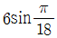
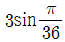
(정답률: 73%)
57. 정격전압 220V, 무부하 단자전압 230V, 정격출력이 40kW인 직류 분권발전기의 계자저항이 22Ω, 전기자 반작용에 의한 전압강하가 5V라면 전기자 회로의 저항(Ω)은 약 얼마인가?
- 0.026
- 0.028
- 0.035
- 0.042
(정답률: 38%)
58. 유도전동기로 동기전동기를 기동하는 경우, 유도전동기의 극수는 동기전동기의 극수보다 2극 적은 것은 사용하는 이유로 옳은 것은? (단, s는 슬립이며 NS는 동기속도이다.)
- 같은 극수의 유도전동기는 동기속도보다 sNS만큼 늦으므로
- 같은 극수의 유도전동기는 동기속도보다 sNS만큼 빠르므로
- 같은 극수의 유도전동기는 동기속도보다 (1-s)NS만큼 늦으므로
- 같은 극수의 유도전동기는 동기속도보다 (1-s)NS만큼 빠르므로
(정답률: 57%)
59. 50Hz로 설계된 3상 유도전동기를 60Hz에 사용하는 경우 단자전압을 110%로 높일 때 일어나는 현상으로 틀린 것은?
- 철손불변
- 여자전류감소
- 온도상승증가
- 출력이 일정하면 유효전류 감소
(정답률: 54%)
60. 단상 유도전동기의 토크에 대한 2차 저항을 어느 정도 이상으로 증가시킬 때 나타나는 현상으로 옳은 것은?(문제 오류로 가답안 발표시 1번으로 발표되었지만 확정답안 발표시 모두 정답 처리 되었습니다. 여기서는 1번을 누르면 정답 처리 됩니다.)
- 역회전 가능
- 최대토크 일정
- 기동토크 증가
- 토크는 항상 (+)
(정답률: 72%)
4과목: 회로이론 및 제어공학
61. 다음 회로망에서 입력전압을 V1(t), 출력전압을 V2(t) 라 할 때, 에 대한 고유주파수 ωn과 제동비 의 값은? (단, R=100Ω, L=2H, C=200μF이고, 모든 초기전하는 0이다.)
- ωn=50, = 0.5
- ωn=50,
 = 0.7
= 0.7 - ωn=250,
 = 0.5
= 0.5 - ωn=250,
 = 0.7
= 0.7
(정답률: 53%)
62. 다음 신호 흐름선도의 일반식은?
(정답률: 75%)
63. 폐루프 전달함수 의 극의 위치를 개루프 전달함수 G(s)H(s)의 이득상수 K의 함수로 나타내는 기법은?
- 근궤적법
- 보드 선도법
- 이득 선도법
- Nyguist 판정법
(정답률: 62%)
64. 2차계 과도응답에 대한 특성 방정식의 근은 이다. 감쇠비 가 사이에 존재할 때 나타나는 현상은?
- 과제동
- 무제동
- 부족제동
- 임계제동
(정답률: 63%)
65. 다음의 블록선도에서 특성방정식의 근은?
- -2, -5
- 2, 5
- -3, -4
- 3, 4
(정답률: 58%)
66. 다음 중 이진 값 신호가 아닌 것은?
- 디지털 신호
- 아날로그 신호
- 스위치의 On-Off 신호
- 반도체 소자의 동작, 부동작 상태
(정답률: 75%)
67. 보드 선도에서 이득여유에 대한 정보를 얻을 수 있는 것은?
- 위상곡선 0°에서의 이득과 0dB과의 차이
- 위상곡선 180°에서의 이득과 0dB과의 차이
- 위상곡선 -90°에서의 이득과 0dB과의 차이
- 위상곡선 -180°에서의 이득과 0dB과의 차이
(정답률: 73%)
68. 블록선도 변환이 틀린 것은?
(정답률: 59%)
69. 그림의 시퀀스 회로에서 전자접촉기 X에 의한 A접점(Normal open contact)의 사용 목적은?
- 자기유지회로
- 지연회로
- 우선 선택회로
- 인터록(interlock)회로
(정답률: 60%)
70. 단위 궤환제어계의 개루프 전달함수가 일 때, K가 -∞로부터 +∞까지 변하는 경우 특성방정식의 근에 대한 설명으로 틀린 것은?
- -∞ ＜ K ＜ 0 에 대하여 근은 모두 실근이다.
- 0 ＜ K ＜ 1 에 대하여 2개의 근은 모두 음의 실근이다.
- K=0 에 대하여 s1=0, s2=-2의 근은 G(s)의 극점과 일치한다.
- 1 ＜ K ＜ ∞ 에 대하여 2개의 근은 음의 실수부 중근이다.
(정답률: 50%)
71. 길이에 따라 비례하는 저항 값을 가진 어떤 전열선에 E0(V)의 전압을 인가하면 P0(W)의 전력이 소비된다. 이 전열선을 잘라 원래 길이의 2/3 로 만들고 E(V)의 전압을 가한다면 소비전력 P(W)는?
(정답률: 63%)
72. 회로에서 4단자 정수 A, B, C, D의 값은?
(정답률: 67%)
73. 어떤 콘덴서를 300V로 충전하는데 9J의 에너지가 필요하였다. 이 콘덴서의 정전용량은 몇 μF 인가?
- 100
- 200
- 300
- 400
(정답률: 64%)
74. 그림과 같은 순 저항회로에서 대칭 3상 전압을 가할 때 각 선에 흐르는 전류가 같으려면 R의 값은 몇 Ω 인가?
- 8
- 12
- 16
- 20
(정답률: 56%)
75. 그림과 같은 RC 저역통과 필터회로에 단위 임펄스를 입력으로 가했을 때 응답 h(t)는?
(정답률: 57%)
76. 전류 I=30sinωt+40sin(3ωt+45°) (A)의 실효값(A)은?
- 25
- 25√2
- 50
- 50√2
(정답률: 56%)
77. 평형 3상 3선식 회로에서 부하는 Y결선이고, 선간전압이 173.2∠0°(V)일 때 선전류는 20∠-120°(A) 이었다면, Y결선된 부하 한상의 임피던스는 약 몇 Ω 인가?
- 5∠60°
- 5∠90°
- 5√3∠60°
- 5√3∠90°
(정답률: 46%)
78. 2전력계법으로 평형 3상 전력을 측정하였더니 한 쪽의 지시가 500W, 다른 한 쪽의 지시가 1500W 이었다. 피상전력은 약 몇 VA 인가?
- 2000
- 2310
- 2646
- 2771
(정답률: 63%)
79. 1km당 인덕턴스 25mH, 정전용량 0.0⑤μF의 선로가 있다. 무손실 선로라고 가정한 경우 진행파의 위상(전파) 속도는 약 몇 km/s인가?
- 8.95×104
- 9.95×104
- 89.5×104
- 99.5×104
(정답률: 62%)
80. f(t)=ejωt의 라플라스 변환은?
(정답률: 63%)
5과목: 전기설비기술기준 및 판단기준
81. 저압 옥상전선로의 시설에 대한 설명으로 틀린 것은?
- 전선은 절연전선을 사용한다.
- 전선은 지름 2.6mm 이상의 경동선을 사용한다.
- 전선은 상시 부는 바람 등에 의하여 식물에 접촉하지 않도록 시설한다.
- 전선과 옥상 전선로를 시설하는 조영재와의 이격거리를 0.5m로 한다.
(정답률: 64%)
82. 사용전압 66kV의 가공전선로를 시가지에 시설할 경우 전선의 지표상 최소 높이는 몇 m 인가?
- 6.48
- 8.36
- 10.48
- 12.36
(정답률: 50%)
83. 가공전선로의 지지물에 시설하는 지선의 시설 기준으로 옳은 것은?
- 지선의 안전율은 2.2 이상이어야 한다.
- 연선을 사용할 경우에는 소선(素線) 3가닥 이상이어야 한다.
- 도로를 횡단하여 시설하는 지선의 높이는 지표상 4m 이상으로 하여야 한다.
- 지중부분 및 지표상 20cm 까지의 부분에는 내식성이 있는 것 또는 아연도금을 한다.
(정답률: 70%)
84. 무선용 안테나 등을 지지하는 철탑의 기초 안전율은 얼마 이상이어야 하는가?
- 1.0
- 1.5
- 2.0
- 2.5
(정답률: 45%)
85. 전기집진장치에 특고압을 공급하기 위한 전기설비로서 변압기로부터 정류기에 이르는 케이블을 넣는 방호장치의 금속제 부분에 사람이 접촉할 우려가 없도록 시설하는 경우 제 몇 종 접지공사로 할 수 있는가?(관련 규정 개정전 문제로 여기서는 기존 정답인 3번을 누르면 정답 처리됩니다. 자세한 내용은 해설을 참고하세요.)
- 제1종 접지공사
- 제2종 접지공사
- 제3종 접지공사
- 특별 제3종 접지공사
(정답률: 59%)
86. 가공전선로의 지지물에 취급자가 오르고 내리는데 사용하는 발판 볼트 등은 지표상 몇 m 미만에 시설하여서는 아니되는가?
- 1.2
- 1.8
- 2.2
- 2.5
(정답률: 72%)
87. 특고압 가공전선로의 지지물로 사용하는 B종 철주에서 각도형은 전선로 중 몇 도를 넘는 수평 각도를 이루는 곳에 사용되는가?
- 1
- 2
- 3
- 5
(정답률: 63%)
88. 빙설의 정도에 따라 풍압하중을 적용하도록 규정하고 있는 내용 중 옳은 것은? (단, 빙설이 많은 지방 중 해안지방 기타 저온계절에 최대풍압이 생기는 지방은 제외한다.)
- 빙설이 많은 지방에서는 고온계절에는 갑종 풍압하중, 저온계절에는 을종 풍압하중을 적용한다.
- 빙설이 많은 지방에서는 고온계절에는 을종 풍압하중, 저온계절에는 갑종 풍압하중을 적용한다.
- 빙설이 적은 지방에서는 고온계절에는 갑종 풍압하중, 저온계절에는 을종 풍압하중을 적용한다.
- 빙설이 적은 지방에서는 고온계절에는 을종 풍압하중, 저온계절에는 갑종 풍압하중을 적용한다.
(정답률: 55%)
89. 조상설비의 조상기(調相機) 내부에 고장이 생긴 경우에 자동적으로 전로로부터 차단하는 장치를 시설해야 하는 뱅크용량(kVA)으로 옳은 것은?
- 1000
- 1500
- 10000
- 15000
(정답률: 62%)
90. 고압 가공전선로에 사용하는 가공지선으로 나경동선을 사용할 때의 최소 굵기(mm)는?
- 3.2
- 3.5
- 4.0
- 5.0
(정답률: 57%)
91. 440V용 전동기의 외함을 접지할 때 접지저항 값은 몇 Ω 이하로 유지하여야 하는가?(관련 규정 개정전 문제로 여기서는 기존 정답인 1번을 누르면 정답 처리됩니다. 자세한 내용은 해설을 참고하세요.)
- 10
- 20
- 30
- 100
(정답률: 55%)
92. 전로에 시설하는 고압용 기계기구의 철대 및 금속제외함에는 제 몇 종 접지공사를 하여야 하는가?(관련 규정 개정전 문제로 여기서는 기존 정답인 1번을 누르면 정답 처리됩니다. 자세한 내용은 해설을 참고하세요.)
- 제1종 접지공사
- 제2종 접지공사
- 제3종 접지공사
- 특별 제3종 접지공사
(정답률: 58%)
93. 차량 기타 중량물의 압력을 받을 우려가 있는 장소에 지중 전선로를 직접 매설식으로 시설하는 경우 매설깊이는 몇 m 이상이어야 하는가?(관련 규정 개정전 문제로 여기서는 기존 정답인 3번을 누르면 정답 처리됩니다. 자세한 내용은 해설을 참고하세요.)
- 0.8
- 1.0
- 1.2
- 1.5
(정답률: 65%)
94. 저압 옥내배선의 사용전압이 400V 미만인 경우 버스덕트 공사는 몇 종 접지공사를 하여야 하는가?(관련 규정 개정전 문제로 여기서는 기존 정답인 3번을 누르면 정답 처리됩니다. 자세한 내용은 해설을 참고하세요.)
- 제1종 접지공사
- 제2종 접지공사
- 제3종 접지공사
- 특별 제3종 접지공사
(정답률: 61%)
95. 고압용 기계기구를 시설하여서는 안 되는 경우는?
- 시가지 외로서 지표상 3m인 경우
- 발전소, 변전소, 개폐소 또는 이에 준하는 곳에 시설하는 경우
- 옥내에 설치한 기계기구를 취급자 이외의 사람이 출입할 수 없도록 설치한 곳에 시설하는 경우
- 공장 등의 구내에서 기계기구의 주위에 사람이 쉽게 접촉할 우려가 없도록 적당한 울타리를 설치하는 경우
(정답률: 56%)
96. 특고압용 변압기의 보호장치인 냉각장치에 고장이 생긴 경우 변압기의 온도가 현저하게 상승한 경우에 이를 경보하는 장치를 반드시 하지 않아도 되는 경우는?
- 유입 풍냉식
- 유입 자냉식
- 송유 풍냉식
- 송유 수냉식
(정답률: 55%)
97. 옥내에 시설하는 전동기가 소손되는 것을 방지하기 위한 과부하 보호 장치를 하지 않아도 되는 것은?
- 정격 출력이 7.5kW 이상인 경우
- 정격 출력이 0.2kW 이하인 경우
- 정격 출력이 2.5kW이며, 과전류 차단기가 없는 경우
- 전동기 출력이 4kW이며, 취급자가 감시할 수 없는 경우
(정답률: 68%)
98. 가공 직류 전차선의 레일면상의 높이는 일반적인 경우 몇 m 이상이어야 하는가?(관련 규정 개정전 문제로 여기서는 기존 정답인 2번을 누르면 정답 처리됩니다. 자세한 내용은 해설을 참고하세요.)
- 4.3
- 4.8
- 5.2
- 5.8
(정답률: 58%)
99. 저압전로에서 그 전로에 지락이 생겼을 경우에 0.5초 이내에 자동적으로 전로를 차단하는 장치를 시설 시 자동차단기의 정격감도전류가 100mA 이면 제3종 접지공사의 접지저항 값은 몇 Ω 이하로 하여야 하는가? (단, 전기적 위험도가 높은 장소인 경우이다.)(오류 신고가 접수된 문제입니다. 반드시 정답과 해설을 확인하시기 바랍니다.)
- 50
- 100
- 150
- 200
(정답률: 33%)
100. 어떤 공장에서 케이블을 사용하는 사용전압이 22kV 인 가공전선을 건물 옆쪽에서 1차 접근상태로 시설하는 경우, 케이블과 건물의 조영재 이격거리는 몇 cm 이상 이어야 하는가?
- 50
- 80
- 100
- 120
(정답률: 31%)
자기 인덕턴스는 다음과 같이 계산된다.
L = μ * N^2 * S / ℓ
여기서, N은 코일의 권선수이다. 코일을 감을수록 N은 증가하며, N^2에 비례하여 자기 인덕턴스가 증가한다. 따라서 권선수 N^2에 비례한다는 것이 옳다.